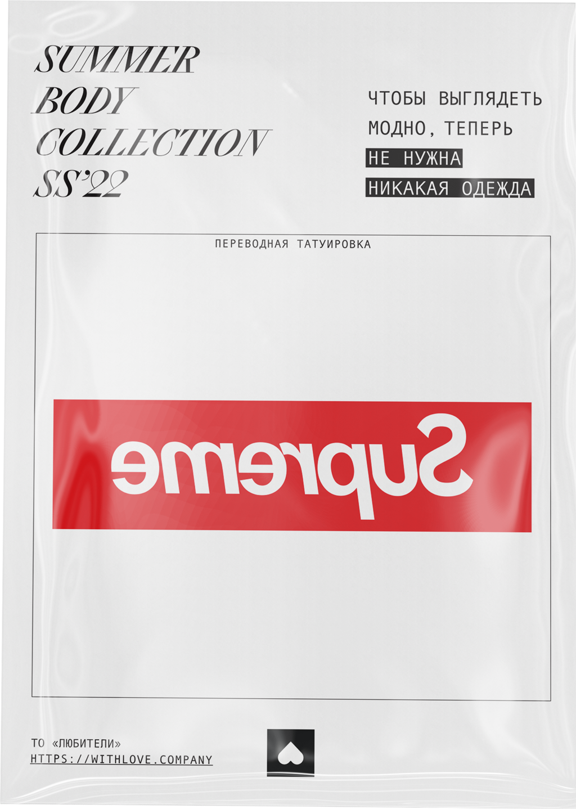

модным человека делают не столько вещи, сколько логотипы на этих вещах. поэтому в нашей летней коллекции мы убрали все ненужное (вещи), и оставили самое важное (логотипы). переводные татуировки с логотипами сделают ваш образ модным и без всякой одежды.


